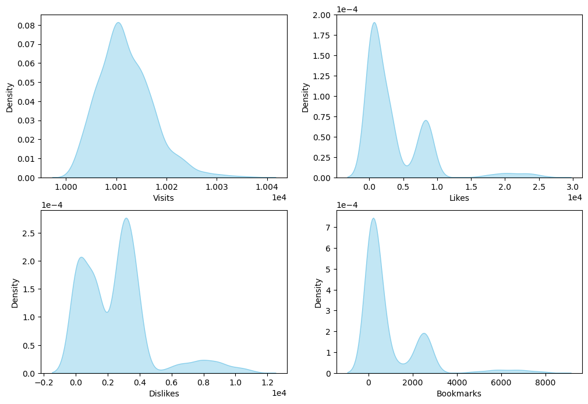
Exercise DL
Objective
This exercise aims to develop a model (machine learning or deep learning) to predict the engagement level generated by different tourist points of interest (POIs).
Exploratory data analysis
Data contains 1,569 samples and available features could be splitted in three classes.
Engagement Features: These columns contain information used to build the target feature that classifies POI engagement (Likes, Dislikes, Bookmarks, and Visits).
Metadata Features: Columns that could be used as model inputs with simple transformations or encoding (categories, tier, locationLon, locationLat, tags, and xps).
Description Feature: Text descriptions of POIs can be found in the shortDescription column. Text descriptions of the POIs are contained in the shortDescription column. As this feature cannot be processed alongside the metadata features, it will be analyzed separately.
Image Data: The path to images associated with each POI (main_image_path).
The dataset is complete and free of duplicates.
Engagement features.
All these features are quantitative variables. As shown in Figure 1, features Likes, Dislikes and Bookmarks show a trimodal distribution. In all three distributions, two sharp peaks appear on the left side and a flat peak appears on the right side. Visits shows an unimodal distribution with positive skewness.
It is reasonable to create a new feature from the difference between Likes and Dislikes. Negative values would indicate low engagement and positive values would suggest high engagement. This new feature show a multimodal distribution with several sharp peaks on the left and a flat peak on the right (see figure Figure 2)
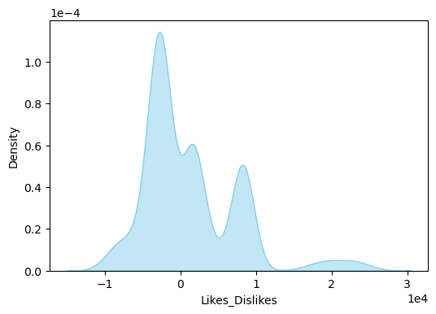
Correlation analysis shows strong relationships between the features Likes, Dislikes, Likes_Dislikes, and Bookmarks (Figure 3). Visits has low correlation with the other features.
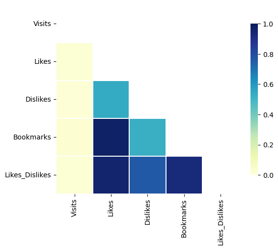
Metadata features
The majority of samples (1,073) are assigned three labels in the categories feature, while only two POIs have none (Figure 4).
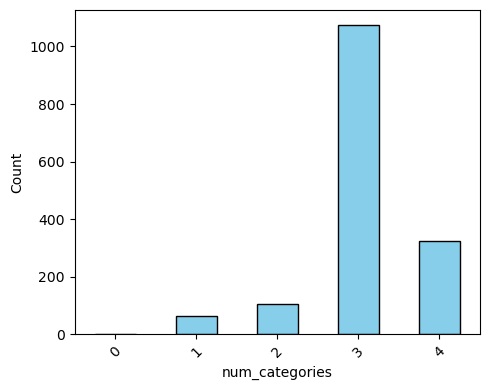
Across the dataset, 12 distinct labels are used. The most common are ‘Historia’ and ‘Cultura,’ each appearing in over half of all POIs (Figure 5). In contrast, labels such as ‘Pintura,’ ‘Naturaleza’, ‘Cine’ and ‘Gastronomía’ are relatively rare, each found in fewer than 5% of the records.
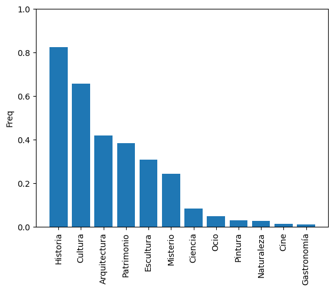
The tags feature provides information similar to categories, but in greater detail. The dataset contains 2,935 unique tags, most of which are applied to more than eight POIs (Figure 6). However, a significant number of tags are used infrequently, appearing in only a few POIs—sometimes just one.
As shown in Figure 7, the majority of POIs have a tier value of one. The number of POIs decreases as the tier increases to four, with a pronounced drop occurring between tiers two and three.
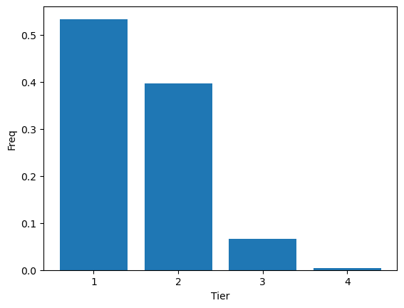
The features locationLon and locationLat exhibit distributions with sharp peaks at 0 and 40, respectively (Figure 8). This pattern suggests that most POIs are concentrated within a small geographic region. Meanwhile, the xps feature displays a multimodal distribution characterized by a sharp peak centered at 1000.
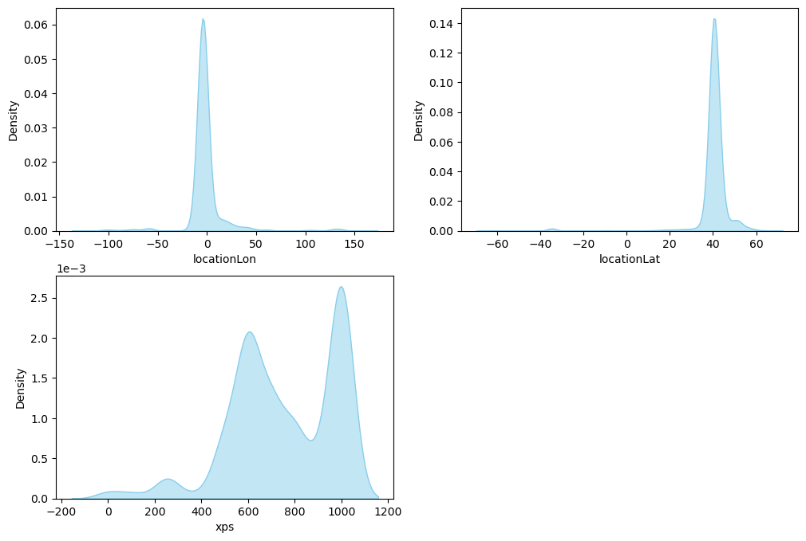
Description feature.
A short text describing the POIs is available at shortDescription feature. It could be in the range from two words to a maximum of 89 words (Figure 9).
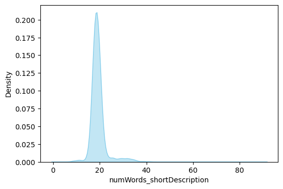
Image feature.
Figure 10 displays a random sample of images. The distribution of the standard deviation (SD) of pixel values for each channel was analyzed and found to be approximately normal. However, some images exhibit very low SD values (Figure 11). Upon inspection, these were found to be ‘empty’ images, appearing almost entirely white (Figure 12).
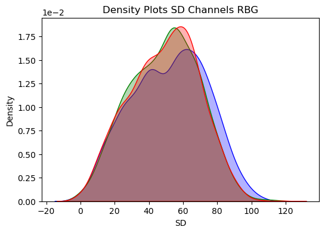
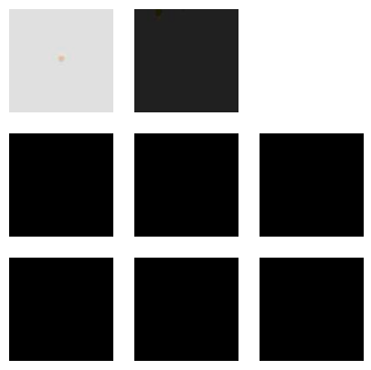
Target feature
Both the Bookmarks and Likes_Dislikes features are reliable indicators of user engagement. They exhibit a high correlation, so either would be a suitable choice for the analysis.
In this study, Likes_Dislikes was selected because it allows for a straightforward separation of samples into low and high engagement based on the sign of its value. Samples with negative values are classified as low engagement POIs, while those with positive values are classified as high engagement POIs. Using this threshold, 827 POIs were identified as low engagement and 742 as high engagement.
The Visits feature could be used to normalize Likes_Dislikes, as shown in Figure 13, to create an engagement rate metric.
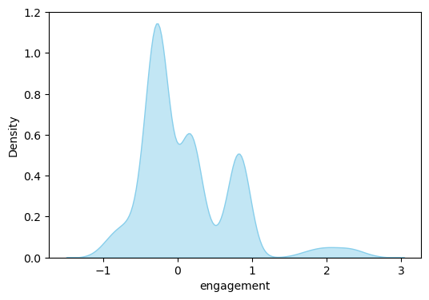
Mutual information between features and target
Of the dummy variables created from the ‘categories’ feature, ‘Escultura’ is by far the most strongly associated with the target (see Figure 14). Other categorical dummy variables with notable association include ‘Arquitectura’, ‘Patrimonio’, ‘Ocio’, ‘Misterio’, and ‘Ciencia’.
Regarding the other features, num_tags and locationLon demonstrate the highest association with the target, while xps and tier also show a measurable relationship.
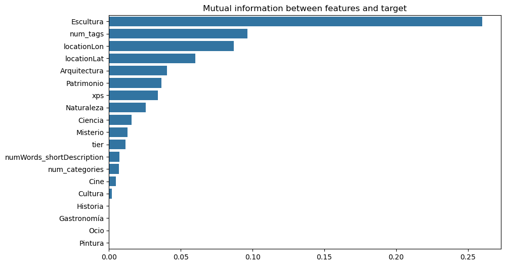
Optimization strategy
Hyperparameter tuning was performed using Optuna framework exploring each model’s parameter space to identify optimal configurations that maximize predictive performance using TPE algorithm. Several scores were calculated but F1-score was used to drive hyperparameter optimization.
Machine learning models
Machine learning models trained on metadata features consistently achieved an F1-score of ~0.8. This performance was characterized by high sensitivity (>0.97) in identifying high-engagement POIs but low precision (<0.68), leading to a substantial number of false positives.
| Model | Train score | Valid score | Precision | Sensitivity |
|---|---|---|---|---|
| Log Regression | 0.805 | 0.796 | 0.675 | 0.971 |
| Random Forest | 0.807 | 0.807 | 0.677 | 1 |
| XGBoost | 0.809 | 0.803 | 0.675 | 0.992 |
Deep learning models
Multiple deep learning models were developed and assessed using different combinations of metadata, images, and embeddings.
FCNN Shallow: A shallow, fully connected neural network that uses metadata as input.
FCNN PCA: fully connected neural network with progressive compression architecture. It uses embeddings from the shortDescription field as input.
ResNet18 Pre: A standard ResNet18 model with pretrained weights, using images as input. All layers are frozen.
ResNet18 Layer4: A ResNet18 model with pretrained weights, fine-tuned for the task. The weights of layer4 are unfrozen and optimized, while earlier layers remain frozen. The model uses images as input.
Multi Modal Pre: Multi-modal neuronal network with three input branches.
Image Branch: Processes images through a ResNet18 backbone.
Text Branch: Processes shortDescription embeddings through a fully connected network with a progressive compression architecture.
Metadata Branch: Directly incorporates metadata features.
The outputs from all three branches are concatenated and passed through a final classifier.
Multi Modal Layer4: Same as above model but with optimization of weights of layer 4.
| Model | Train score | Valid score | Precision | Sensitivity |
|---|---|---|---|---|
| FCNN Shallow | 0.748 | 0.79 | 0.669 | 0.966 |
| FCNN PCA | 0.309 | 0.643 | 0.474 | 1 |
| ResNet18 Pre | 0.714 | 0.8 | 0.726 | 0.891 |
| ResNet18 Layer4 | 0.967 | 0.851 | 0.862 | 0.84 |
| Multi Modal Pre | 0.892 | 0.878 | 0.91 | 0.849 |
| Multi Modal Layer4 | 0.874 | 0.849 | 0.849 | 0.849 |
FCNN Shallow and ResNet18 Pre yield results comparable to traditional Machine Learning models. Using the pre-trained ResNet18 via transfer learning achieves a balance between precision and sensitivity, improving precision at the cost of some sensitivity reduction. FCNN_pca demonstrates poor performance, inferior to all ML models.
ResNet18 Layer4, Multi Modal Pre, and Multi Modal Layer4 models achieve significantly higher F1-scores, all exceeding 0.84. However, ResNet18 Layer4 shows substantial overfitting, with a high training F1-score that doesn’t generalize to validation. In contrast, both Multi Modal models show consistent performance across training and validation sets. Multi Modal Pre delivers the best overall results, with precision exceeding 0.9.
The choice between top-performing models depends on the specific objective. For higher precision in detecting high-engagement POIs, Multi Modal Pre is recommended. When higher sensitivity is required for this task, Random Forest becomes the more suitable choice.
Final models
Based on the results above, two models were trained using 80% of the dataset, with validation performed on the remaining 20%. The results are presented below.
Random forest model
The Random Forest model successfully identifies all high-engagement POIs (Sensitivity = 1.0), but at the cost of including some false positives, resulting in a Precision of 0.71 (see confusion matrix Figure 15). This trade-off yields an F1-score of 0.71 on the testing dataset.
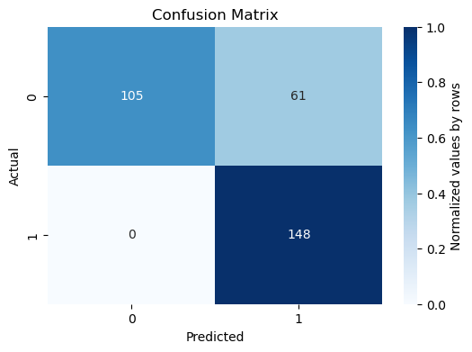
Multi modal model with pretrained weights (Multi Modal Pre)
This model demonstrates a strong balance between sensitivity and precision, with values of 0.88 and 0.84 respectively (see confusion matrix in Figure 16). The resulting F1-score is 0.86.
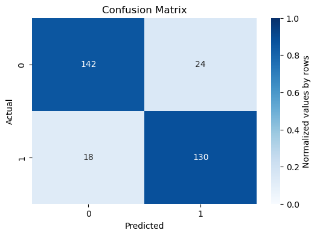